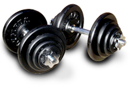

Welcome to the Fitness Calculator.
Calorie Conversions:
- One push up burns approximately half a calorie.
(1 push up = 0.50 cal) - One sit up burns approximately 0.20 calories.
(1 sit up = 0.20 cal) - One pull up burns approximately 3 calories.
(1 pull up = 3 cal) - One minute running burns approximately 12 calories.
(1 min = 12 cal)

How This Works:
People often calculate their calorie intake in order to regulate their diet and stay healthy. However, have you ever wondered how many calories are leaving your body?
The Fitness Calculator lets you know approximately how many calories you burned during your workout. Simply enter the amounts of each strenuous activity you have completed and the Fitness Calculator will show you how many calories you burned. Click here to get started!